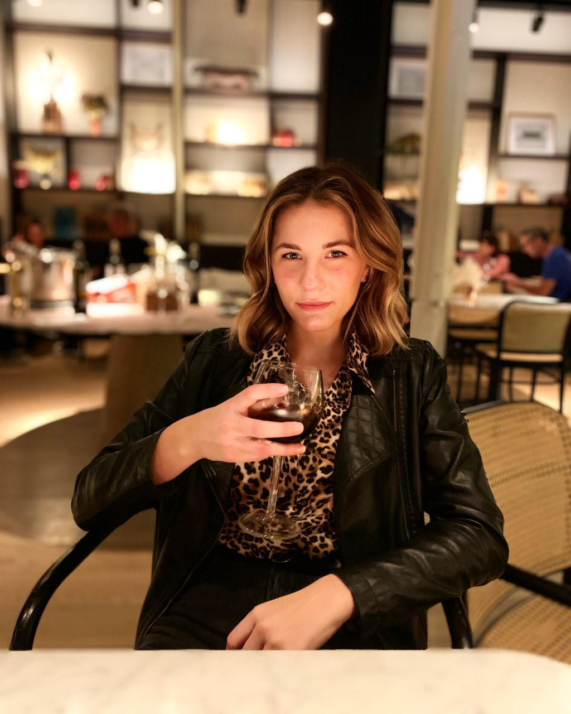

Cheers!
Original:
Hi! My name is Cailin Brashear, and I’m a student at the University of Pittsburgh studying public professional writing and communications with a minor in international relations. I currently hold an internship as a public relations representative at an international film streaming website called Filmatique – which allows me to bring my interests in art, cinema, social issues, and world travel to life! For the short duration of my adult life thusfar, I have spent a great deal of time traveling the world and pursuing my deep interests in fields such as literature, art, food, music and writing. In my free time, when I’m not studying, working as a sever at a local restaurant, or engaged in a multitude of tasks for my internship and clubs I am involved with, I like to cook, surround myself with family and friends, read, write, go hiking and engage in meaningful conversations about life and society!
Revised:
Hi! My name is Cailin Brashear, and I’m a student at the University of Pittsburgh studying Public Professional Writing and Communications with a minor in International Political Science. I currently hold an internship as a public relations intern at an international film streaming website called Filmatique – which allows me to bring my interests in art, cinema, social issues, and world culture to life! For the short duration of my adult life thus far, I have enjoyed spending my time traveling the world and pursuing my deep interests in fields such as literature, art, food, music and writing. I enjoy the humanities and feel passionately about many current social issues which I feel affects everyone’s lives. As a student, my studies take up a great majority of my time. But, when I’m not hitting the books, I enjoy cooking, listening to music, hiking, and surrounding myself with family and friends! I also hold a second part-time job as a server at Shady Grove and am actively involved in Panther Relations – a student run PR firm on campus, and Sigma Sigma Sigma! In my life I hope to be able to put my energy into many places, people, and every experience that I strive to have and make the most of.
Revised:
My name is Cailin Brashear, and I am an upcoming senior at the University of Pittsburgh majoring in both Communication and Public Professional Writing with a minor in Political Science. Outside of the classroom, my personal interests lie primarily in the arts, which has been reflected in some of my previous work experience with Filmatique, a boutique, art-house film streaming company.
I have always considered my love for the arts to be embedded into who I am and who I want to be. I admire music, art, cinema and literature and hold a continuous thirst for learning and consuming as much of it as I can. In fact, some of my most rewarding work with the arts was when I found myself as an undergraduate teacher’s assistant for Introduction to Modern Art here at the University of Pittsburgh during my sophomore year. I find a great deal of value in working with my hands – everything from painting and sketching to cooking and dabbling in mechanic work.
More recently, I have become enamored with outdoor activities like gardening and hiking as I try to become more acquainted with the world around me. This has translated directly into my traveling experiences which I value as some of the more empowering moments of my life. As my Political Science minor infers, I like to keep up to date with the current political climate and find it important to develop fact-based opinions on societal and political issues.